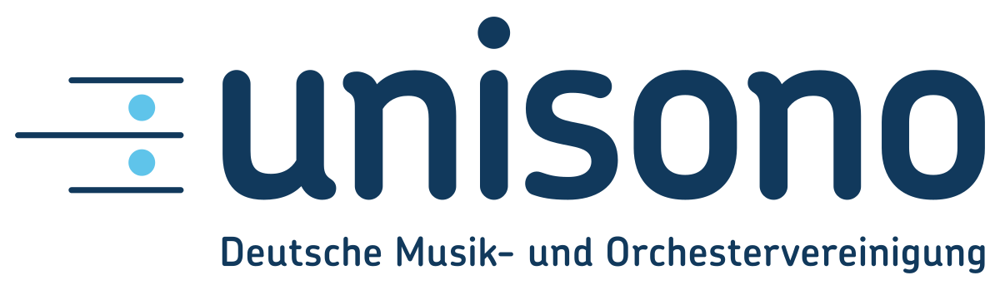
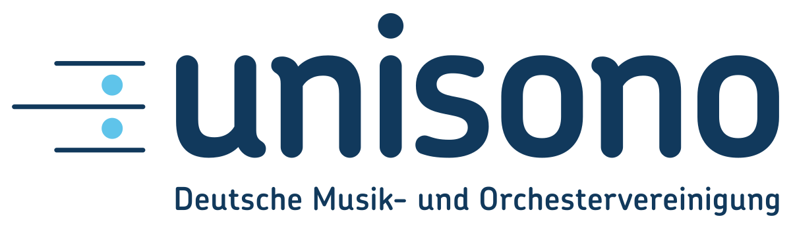

Terminación de llamadas nacionales e internacionales con
precios competitivos y cobertura total

Llega a cualquier destino en el mundo con tarifas accesibles
que se ajustan a tus necesidades, sin renunciar a la
confiabilidad de una conexión estable y con calidad
certificada en cada comunicación. Tanto si tu empresa atiende
clientes locales como internacionales, contarás con una
infraestructura sólida que asegura la mejor experiencia de
voz.
Capacidad robusta y alto CPS para Call Centers y grandes
volúmenes de llamadas

Nuestro servicio está diseñado para soportar picos de tráfico
y grandes cantidades de llamadas simultáneas, lo que lo
convierte en la solución ideal para centros de contacto,
campañas de telemarketing o cualquier operación empresarial
que requiera estabilidad a gran escala.
Calidad, estabilidad y continuidad operativa garantizada en
todo momento
Con una red redundante y monitoreada de forma constante,
aseguramos que tus llamadas mantengan una calidad superior y
que tu negocio nunca se vea afectado por interrupciones. La
experiencia del usuario final se mantiene fluida y confiable
en cada interacción.
Recargas de saldo rápidas y gestión financiera ágil para
mantener siempre activa tu operación
Administra de forma sencilla el saldo de tus servicios, con
procesos de recarga inmediatos que evitan pausas o
interrupciones en la comunicación. Mantén la continuidad de
tus operaciones sin preocuparte por cortes inesperados.


 
